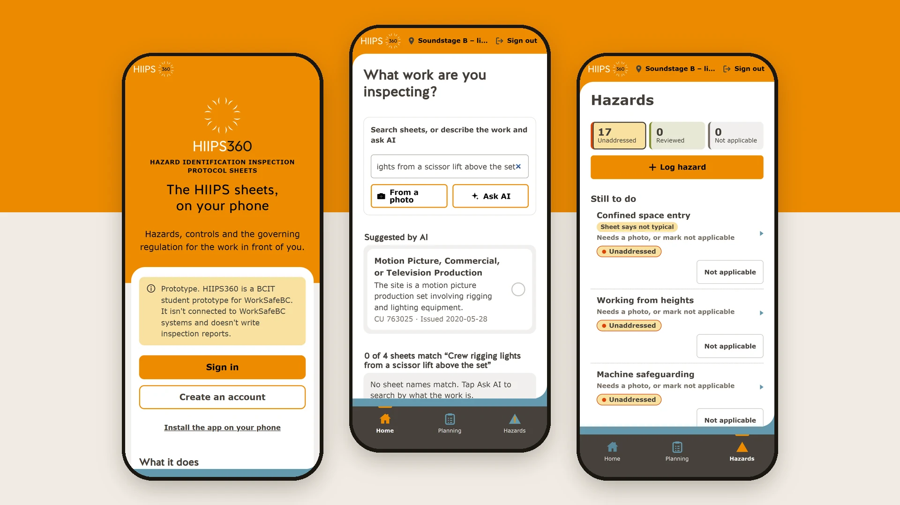
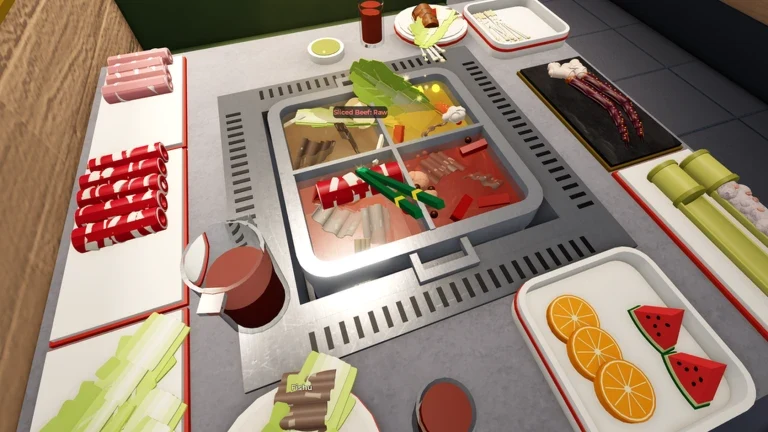
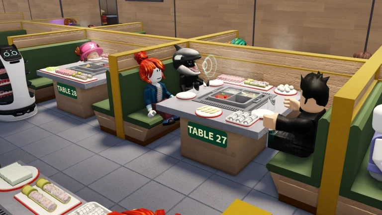
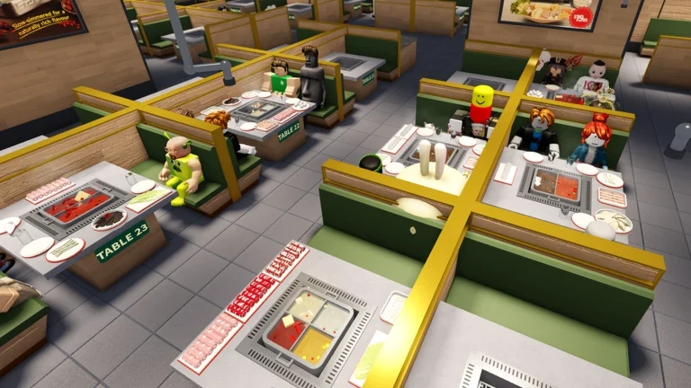
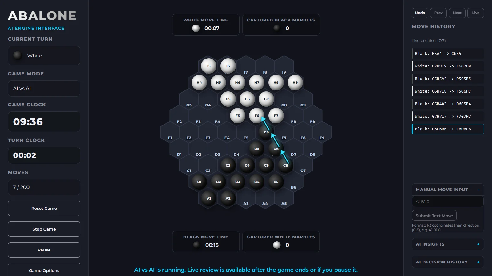

Recoil Ascent
A Java platformer where your gun's recoil is how you move. Compiled to JavaScript, so it runs right here. Needs a keyboard.
Student developer, hungry to learn game dev and the systems underneath.
Most recently: a localization scanner for an unannounced Unreal Engine 5 title, and model fallbacks that keep AI hazard suggestions working for WorkSafeBC officers. BCIT Computer Systems Technology (AI/ML), graduating December 2026. Richmond, BC.
A Java platformer where your gun's recoil is how you move. Compiled to JavaScript, so it runs right here. Needs a keyboard.
A Python text roguelike with rock-paper-scissors combat, running unchanged in the browser on Pyodide.
Software Engineer (New Grad), Contract
May 2026 – July 2026
Unannounced Unreal Engine 5 title. Joined for a one-month BCIT practicum, then was contracted for another month.
Environment: Unreal Engine 5 (modular, plugin-based architecture), Blueprints, Perforce, agile team
Developer, BCIT student team with WorkSafeBC as the client
Sep 2026 – present
A hazard-identification app for WorkSafeBC prevention officers, built for the client through BCIT's COMP 4800 industry project.

Environment: React PWA, Node.js, Express, MongoDB, Gemini API, Railway, client-facing agile team
Team project, COMP 4989. In progress; the repository is private.
Oct 2026 – present
17% to 83% correct product matches on unseen real receipts after adding synthetic training data



Side project with 3 friends on Roblox
June 2023 – Nov 2026

Team of 4, COMP 3981
Feb – Apr 2026
22 / 24 games won in a 48-game round-robin against three other agents
Solo project, COMP 2522
Sep 2025 – Dec 2025
Solo class project, COMP 1510, Term 1
Mar 2025 – Apr 2025
Diploma in Computer Systems Technology (AI/ML Option), Vancouver, BC
January 2025 – present, expected graduation December 2026
Relevant coursework: Operating Systems, Artificial Intelligence (Python game-playing agents)
Opens Gmail. Use something else? Open your mail app or copy the address.